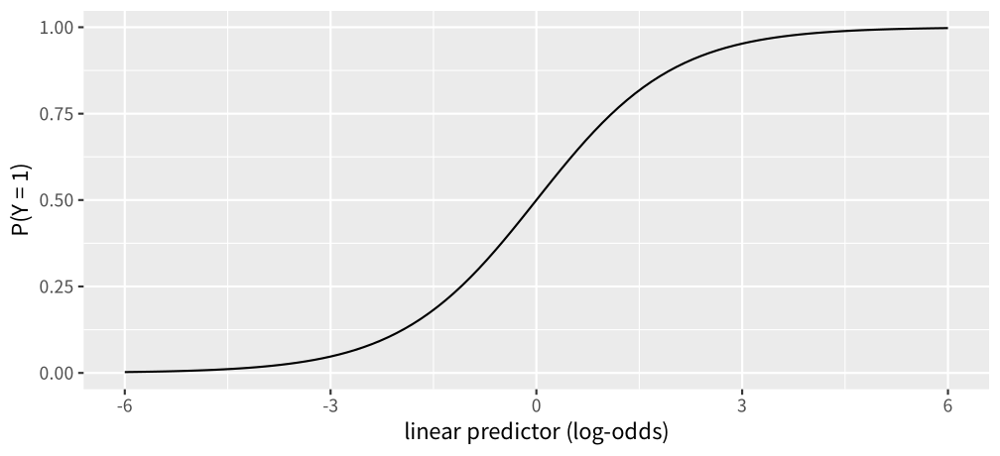
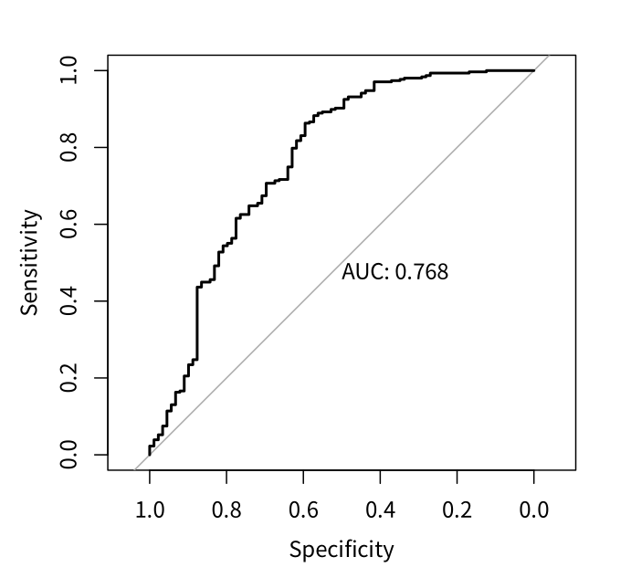
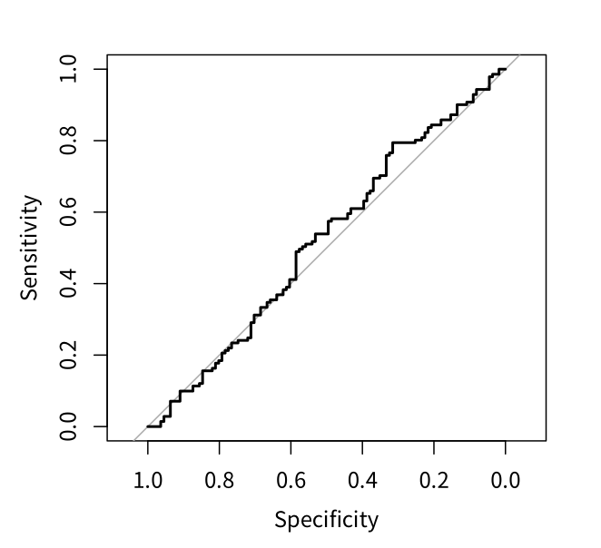

首頁 › 課程筆記 › 第 7 章 第 6 章的線性迴歸假設反應變數 Y 是連續、近似常態的。但商業上很多重要的 Y 不是這樣：顧客會不會 流失、信用卡有沒有 核准（二元：是／否）、一個月刷了幾次 卡（計數：0、1、2、…）。這時要用廣義線性模型 （Generalized Linear Model, GLM）。R 用 glm() 配適，用法和 lm() 幾乎一樣，只多了一個 family 引數 。
複製 R library ( tidyverse )
library ( broom )
library ( AER ) # 提供 CreditCard、Fatalities 資料與 dispersiontest()
data ( "CreditCard" )
7.1 GLM 的三個組成任何 GLM 都由三部分構成：
隨機成分 （random component）：Y 服從什麼分配——常態、二項、Poisson、Gamma……系統成分 （systematic component）：預測變數的線性組合 \(\eta=\beta_0+\beta_1x_1+\dots+\beta_px_p\)，叫線性預測式 。連結函數 （link function）\(g\)：把 Y 的平均數 \(\mu=E(Y)\) 和線性預測式連起來，\(g(\mu)=\eta\)。
為什麼需要連結函數？以二元資料為例，\(\mu\) 是「發生的機率」，必須介於 0 和 1；但 \(\eta\) 可以是任何實數。直接令 \(\mu=\eta\) 會預測出 1.3 或 -0.2 這種不可能的機率。連結函數把 0～1 的機率「拉開」成整條實數線，兩邊才能相等。
Y 的型態
分配 family
預設連結
模型名稱
連續
gaussianidentity：\(\mu=\eta\)
線性迴歸（同 lm()）
二元 0/1
binomiallogit：\(\log\frac{\mu}{1-\mu}=\eta\)
邏輯斯迴歸
計數
poissonlog：\(\log\mu=\eta\)
Poisson 迴歸
正的連續（偏斜）
Gammainverse（常改用 log）
Gamma 迴歸
複製 ▶ 執行 R m_lm <- lm ( mpg ~ wt , data = mtcars )
m_glm <- glm ( mpg ~ wt , data = mtcars , family = gaussian )
rbind ( lm = coef ( m_lm ), glm = coef ( m_glm )) # family = gaussian 就是線性迴歸
## (Intercept) wt
## lm 37.29 -5.344
## glm 37.29 -5.344Concept Check：7.1 GLM 的三個組成 題目照期末考的題型自編（選擇、填空、簡答、寫程式），不是老師出的題目。選擇與填空用英文題幹，附中文題意。
The response variable is whether a customer churns (yes/no). Which family should be used in glm()?
(A) gaussian(B) poisson(C) Gamma(D) binomial顯示解答 中文題意
反應變數是顧客是否流失（是／否），glm() 要用哪個 family？
答案 (D) binomial
解析
二元反應用 binomial（預設 logit 連結），也就是邏輯斯迴歸。計數用 poisson；連續常態用 gaussian。
Why does logistic regression use the logit link instead of modeling the probability directly as \(\beta_0+\beta_1x\)?
(A) A straight line can predict probabilities below 0 or above 1 (B) The logit link makes the model identical to ordinary least squares (C) The logit link removes the need to estimate an intercept term (D) A straight line cannot be fitted when the predictor is categorical 顯示解答 中文題意
邏輯斯迴歸為什麼要用 logit 連結，而不是直接令機率等於 \(\beta_0+\beta_1x\)？
答案 (A) A straight line can predict probabilities below 0 or above 1
解析
機率必須介於 0 和 1，直線則會無限延伸。logit 把 (0, 1) 的機率轉成 (−∞, ∞) 的 log-odds，再令它等於線性預測式，反推回來的機率一定落在 0 和 1 之間。
A GLM consists of a random component, a systematic component, and a _
顯示解答 中文題意
GLM 由隨機成分、系統成分，以及連結平均數與線性預測式的哪一種函數組成？
解析
\(g(\mu)=\eta\)。binomial 預設 logit、poisson 預設 log、gaussian 預設 identity。
Why is lm() a poor choice when Y is 0/1 (e.g. whether a customer churns)?
(A) lm() refuses to run when Y only takes the values 0 and 1(B) Its predictions can fall below 0 or above 1, which are not probabilities (C) lm() can only use one predictor when Y has two categories(D) Its coefficients are always exactly zero whenever Y is a binary variable 顯示解答 中文題意
Y 是 0／1 時，為什麼不適合用 lm()？
答案 (B) Its predictions can fall below 0 or above 1, which are not probabilities
解析
線性迴歸的預測值沒有範圍限制，可能出現 −0.2 或 1.3；誤差也不是常態、變異數也不固定。邏輯斯迴歸透過 logit 連結函數，讓預測值一定落在 0 與 1 之間。
7.2 邏輯斯迴歸機率、勝算、log-odds
先釐清三個名詞。若事件發生的機率是 \(p\)：
勝算 （odds）\(=\dfrac{p}{1-p}\)：發生和不發生的比值。\(p=0.8\) 時勝算是 4（發生的可能是不發生的 4 倍）。log-odds （logit）\(=\log\dfrac{p}{1-p}\)：勝算取自然對數，範圍是整條實數線。勝算比 （odds ratio, OR）：兩個勝算相除，用來比較兩種情況。
邏輯斯迴歸的模型：
\[\log\frac{P(Y=1)}{1-P(Y=1)}=X\beta \quad\Longleftrightarrow\quad P(Y=1)=\frac{e^{X\beta}}{1+e^{X\beta}}\]
右邊這個 S 形函數把任何實數壓到 0 和 1 之間：
複製 R ggplot ( data.frame ( eta = c ( -6 , 6 )), aes ( eta )) +
stat_function ( fun = plogis ) +
labs ( x = "linear predictor (log-odds)" , y = "P(Y = 1)" )

plogis() 就是 \(\frac{e^x}{1+e^x}\)（logistic 分配的累積函數，第 4 章 p 前綴的規則）；反過來 qlogis(p) 是 logit。
配適：信用卡核卡資料
AER::CreditCard 有 1,319 位申請人：card 是否核卡、reports 重大負面信用紀錄次數、age 年齡、income 年收入（萬美元）、owner 是否有自有住宅。
複製 R CreditCard $ card <- ifelse ( CreditCard $ card == "yes" , 1 , 0 ) # yes/no 轉成 1/0
table ( CreditCard $ card )
##
## 0 1
## 296 1023複製 R logit_model <- glm ( card ~ reports + age + income + owner ,
data = CreditCard ,
family = binomial ( link = "logit" ))
summary ( logit_model )
##
## Call:
## glm(formula = card ~ reports + age + income + owner, family = binomial(link = "logit"),
## data = CreditCard)
##
## Coefficients:
## Estimate Std. Error z value Pr(>|z|)
## (Intercept) 1.3274 0.2873 4.62 0.0000038 ***
## reports -1.3342 0.1128 -11.83 < 2e-16 ***
## age -0.0124 0.0085 -1.46 0.14479
## income 0.2094 0.0607 3.45 0.00056 ***
## owneryes 0.7071 0.1825 3.87 0.00011 ***
## ---
## Signif. codes: 0 '***' 0.001 '**' 0.01 '*' 0.05 '.' 0.1 ' ' 1
##
## (Dispersion parameter for binomial family taken to be 1)
##
## Null deviance: 1404.6 on 1318 degrees of freedom
## Residual deviance: 1071.3 on 1314 degrees of freedom
## AIC: 1081
##
## Number of Fisher Scoring iterations: 6
family = binomial(link = "logit")：二項分配 + logit 連結；link = "logit" 是預設，寫 family = binomial 就好。反應變數可以是 0/1、TRUE/FALSE，或兩個水準的因子 （第一個水準當 0）。
係數表的檢定是 z 檢定 （z value、Pr(>|z|)），不是 t 檢定 ，但讀法相同。
Null deviance 是只有截距的模型的偏差，Residual deviance 是這個模型的偏差：差越多，表示預測變數解釋越多。AIC 用來比較模型。
解讀係數：log-odds 與勝算比
係數是 log-odds 尺度：reports 的係數 -1.334 表示負面紀錄每多一次，核卡的 log-odds 減少 1.33。log-odds 不直觀，取指數變成勝算比 ：
複製 R exp ( cbind ( OR = coef ( logit_model ), confint ( logit_model )))
## OR 2.5 % 97.5 %
## (Intercept) 3.7713 2.1463 6.6253
## reports 0.2634 0.2093 0.3256
## age 0.9877 0.9715 1.0045
## income 1.2330 1.0985 1.3938
## owneryes 2.0281 1.4239 2.9145
reports 的 OR = 0.263：負面紀錄每多一次，核卡的勝算 變成原本的 0.26 倍，也就是減少約 74%。
income 的 OR = 1.233：年收入每多 1 萬美元，勝算增加約 23%。
owneryes 的 OR = 2.03：有自有住宅者的勝算是沒有者的約 2 倍。
age 的信賴區間 包含 1（p 值 也不顯著 ），表示年齡沒有明顯影響。
重點 OR 怎麼讀 OR > 1 表示 X 增加時事件更容易發生；OR < 1 表示更不容易；OR = 1 表示沒影響。OR 是勝算的倍數，不是機率的倍數 。
算出某個人的核卡機率
一位 30 歲、年收入 10 萬、有房子、沒有負面紀錄的申請人：
複製 R b <- coef ( logit_model )
eta <- b [ 1 ] + 0 * b [ "reports" ] + 30 * b [ "age" ] + 10 * b [ "income" ] + 1 * b [ "owneryes" ]
odds <- exp ( eta )
odds / ( 1 + odds ) # 機率
## (Intercept)
## 0.9772## (Intercept)
## 0.9772複製 R predict ( logit_model , newdata = data.frame ( reports = 0 , age = 30 , income = 10 , owner = "yes" ),
type = "response" )
## 1
## 0.9772predict(..., type = "response") 直接回傳機率；不加 type = "response"，回傳的是 log-odds（線性預測式 η）。
預測與混淆矩陣
複製 R prob <- predict ( logit_model , type = "response" ) # 每個人的核卡機率
head ( round ( prob , 3 ))
## 1 2 3 4 5 6
## 0.925 0.806 0.928 0.815 0.976 0.827複製 R pred <- ifelse ( prob > 0.5 , 1 , 0 ) # 機率 > 0.5 判為核卡
table ( Predicted = pred , Actual = CreditCard $ card ) # 混淆矩陣
## Actual
## Predicted 0 1
## 0 105 17
## 1 191 1006複製 R mean ( pred == CreditCard $ card ) # 正確率
## [1] 0.8423混淆矩陣 （confusion matrix）把預測和實際交叉列表，對角線是預測正確的人數。
實際 = 1
實際 = 0
預測 = 1
真陽性 TP
偽陽性 FP
預測 = 0
偽陰性 FN
真陰性 TN
正確率（accuracy）= (TP + TN) / 全部。
敏感度 （sensitivity，真陽率）= TP / (TP + FN)：實際是 1 的人，有多少被抓到。特異度 （specificity，真陰率）= TN / (TN + FP)：實際是 0 的人，有多少被正確排除。門檻 0.5 不是固定的：調高門檻，判為 1 的人變少，敏感度下降、特異度上升。
考古題出過 填充題：配適邏輯斯迴歸的函數 考古題：「The ____ function in R is used for fitting logistic regression models, which are commonly employed for binary classification problems.」答案是 glm()（搭配 family = binomial）。
Concept Check：7.2 邏輯斯迴歸 題目照期末考的題型自編（選擇、填空、簡答、寫程式），不是老師出的題目。選擇與填空用英文題幹，附中文題意。
The _
顯示解答 中文題意
R 中配適邏輯斯迴歸（常用於二元分類）的函數是什麼？
答案 glm()（family = binomial）
解析
考古題原題。寫 lm() 是錯的；glm(y ~ x, family = binomial, data = df)。
For a fitted logistic model m, what does predict(m, newdata, type = "response") return?
(A) The predicted log-odds for each observation (B) The predicted class labels 0 or 1 for each observation (C) The predicted probability that Y = 1 (D) The odds ratio of each predictor in the model 顯示解答 中文題意
predict(m, newdata, type = "response") 回傳什麼？
答案 (C) The predicted probability that Y = 1
解析
type = "response" 回傳反應變數尺度的值，對邏輯斯迴歸就是機率。不加時（預設 type = "link"）回傳 log-odds。predict 不會自動分類，要自己用門檻 ifelse(p > 0.5, 1, 0)。
In a logistic regression, the coefficient of income is 0.18, so \(e^{0.18}\approx 1.20\). Which interpretation is correct?
(A) Each extra unit of income raises the probability by 20 points (B) Each extra unit of income raises the probability by 18% (C) Each extra unit of income multiplies the probability by 1.20 (D) Each extra unit of income multiplies the odds by about 1.20 顯示解答 中文題意
income 係數 0.18、\(e^{0.18}\approx1.20\)，正確的解讀是哪一個？
答案 (D) Each extra unit of income multiplies the odds by about 1.20
解析
指數化的係數是勝算比：勝算變成 1.2 倍，即增加 20%。它描述的是勝算（odds），不是機率；機率的變化量會隨原本的機率高低而不同。
A confusion matrix shows TP = 40, FN = 10, FP = 20, TN = 130. What is the sensitivity?
(A) 0.80 (B) 0.67 (C) 0.87 (D) 0.85 顯示解答 中文題意
TP = 40、FN = 10、FP = 20、TN = 130，敏感度是多少？
解析
敏感度 = TP / (TP + FN) = 40 / 50 = 0.80。(B) 是 TP / (TP + FP) = 精確率；(C) 是特異度 130 / 150；(D) 是正確率 170 / 200。
Using logit_model, compute the approval probability for an applicant with 2 derogatory reports, age 40, income 5 and no home ownership, in two ways: with plogis() on the linear predictor, and with predict(type = "response").
顯示解答 中文題意
計算 reports = 2、age = 40、income = 5、沒有自有住宅的人的核卡機率：用 plogis() 手算，再用 predict() 驗證。
答案 複製 R b <- coef ( logit_model )
eta <- b [ 1 ] + 2 * b [ "reports" ] + 40 * b [ "age" ] + 5 * b [ "income" ] + 0 * b [ "owneryes" ]
plogis ( eta )
## (Intercept)
## 0.3122複製 R predict ( logit_model ,
newdata = data.frame ( reports = 2 , age = 40 , income = 5 , owner = "no" ),
type = "response" )
## 1
## 0.3122解析
owner 是因子，owneryes 這個虛擬變數在「沒有」時為 0。newdata 的 owner 要給 "no"（和原始資料的水準名稱一致）。
7.3 訓練集、測試集與 ROC 曲線上一節用同一份資料 配適又評估，正確率會過度樂觀。正確做法是把資料分成訓練集 （配適模型）和測試集 （評估模型），第 8 章會詳細說明。這裡用老師課堂檔的 tidyverse 寫法，依 card 分層抽 70% 當訓練集：
複製 R set.seed ( 100 )
CreditCard $ index <- 1 : nrow ( CreditCard )
train_df <- CreditCard %>% group_by ( card ) %>% sample_frac ( 0.7 ) %>% ungroup ()
test_df <- anti_join ( CreditCard , train_df , by = "index" )
c ( train = nrow ( train_df ), test = nrow ( test_df ))
## train test
## 923 396
group_by(card) %>% sample_frac(0.7)：在 card = 0 和 card = 1 兩組中各自 抽 70%，讓訓練集和測試集的核卡比例一致（分層抽樣）。anti_join(x, y, by)：留下 x 中對不上 y 的列，也就是沒被抽到訓練集的那 30%。
複製 R model <- glm ( card ~ reports + age + income + owner , data = train_df , family = binomial )
predicted <- predict ( model , test_df , type = "response" )
pred_class <- ifelse ( predicted > 0.5 , 1 , 0 )
table ( Predicted = pred_class , Actual = test_df $ card )
## Actual
## Predicted 0 1
## 0 35 9
## 1 54 298複製 R mean ( pred_class == test_df $ card )
## [1] 0.8409ROC 曲線與 AUC
正確率會隨門檻改變。ROC 曲線 把所有可能的門檻都試一遍，畫出每個門檻下的「敏感度（真陽率）」對「1 − 特異度（偽陽率）」：
複製 R library ( pROC )
roc_obj <- roc ( test_df $ card , predicted , quiet = TRUE )
plot ( roc_obj , print.auc = TRUE )

## Area under the curve: 0.768
左上角是完美分類（真陽率 1、偽陽率 0）；對角線是亂猜。曲線越往左上凸越好。
AUC （Area Under the Curve）是曲線下面積：1 完美、0.5 等於亂猜。它和門檻無關，常用來比較不同模型。注意 pROC 預設的橫軸是 Specificity（由 1 到 0），和「1 − 特異度」是同一件事，只是刻度方向相反。
Concept Check：7.3 訓練集、測試集與 ROC 曲線 題目照期末考的題型自編（選擇、填空、簡答、寫程式），不是老師出的題目。選擇與填空用英文題幹，附中文題意。
A classifier has AUC = 0.5. What does this mean?
(A) It classifies exactly half of the cases correctly (B) It is perfect at a threshold of 0.5 (C) It always predicts the majority class (D) It performs no better than random guessing 顯示解答 答案 (D) It performs no better than random guessing
解析
AUC 0.5 的 ROC 曲線落在對角線上，等於隨機猜測；AUC 1 才是完美分類。AUC 和門檻無關，也不是「正確率 50%」。
After train_df <- df %>% sample_frac(0.7), which code creates the test set containing the remaining 30% of rows (index is a unique ID)?
(A) anti_join(df, train_df, by = "index")(B) inner_join(df, train_df, by = "index")(C) left_join(train_df, df, by = "index")(D) full_join(df, train_df, by = "index")顯示解答 答案 (A) anti_join(df, train_df, by = "index")
解析
anti_join(x, y) 留下 x 中對不上 y 的列，也就是沒被抽進訓練集的那些。inner_join 剛好相反，只留下訓練集那 70%。
Why should a classification model be evaluated on a test set rather than on the data used to fit it?
顯示解答 中文題意
為什麼分類模型要用測試集評估，而不是用配適時的資料？
答案 模型是依照訓練資料估計的，會把訓練資料中的雜訊也配適進去，所以在同一批資料上算出的正確率會過度樂觀，無法代表模型面對新顧客時的表現。把一部分資料留下來不參與配適，再用它評估，才能誠實估計模型對「沒看過的資料」的預測能力。
解析
第 8 章的交叉驗證是把這個想法做得更穩定的版本。
Using ISLR::Smarket, fit a logistic regression of Direction on Lag1–Lag5 and Volume using years 2001–2004 as the training set. Predict 2005 with threshold 0.5, report the confusion matrix and test accuracy, and compute the AUC.
顯示解答 中文題意
用 Smarket 以 2001–2004 年為訓練集配適邏輯斯迴歸，預測 2005 年（門檻 0.5），報告混淆矩陣、正確率與 AUC。
答案 複製 R library ( ISLR )
train7 <- subset ( Smarket , Year <= 2004 )
test7 <- subset ( Smarket , Year == 2005 )
m7 <- glm ( Direction ~ Lag1 + Lag2 + Lag3 + Lag4 + Lag5 + Volume ,
family = binomial , data = train7 )
p7 <- predict ( m7 , newdata = test7 , type = "response" ) # P(Direction = "Up")
pred7 <- ifelse ( p7 > 0.5 , "Up" , "Down" )
table ( Predicted = pred7 , Actual = test7 $ Direction )
## Actual
## Predicted Down Up
## Down 77 97
## Up 34 44複製 R mean ( pred7 == test7 $ Direction )
## [1] 0.4802複製 R roc7 <- roc ( test7 $ Direction , p7 , levels = c ( "Down" , "Up" ), direction = "<" , quiet = TRUE )
auc ( roc7 )
## Area under the curve: 0.52
解析
老師講義的課後練習。Direction 是因子，第一個水準 Down 當 0、Up 當 1，所以預測機率是「上漲」的機率。測試正確率只有約 48%、AUC 約 0.52，和亂猜差不多——用過去幾天的報酬預測今天股市漲跌本來就非常困難。這是一個「模型在訓練集看起來還行、在測試集卻不行」的好例子。
7.4 Poisson 迴歸模型
反應變數是計數 時（例如過去一年信用卡的活躍帳戶數 active），用 Poisson 迴歸：
\[Y_i\sim\text{Poisson}(\mu_i),\qquad \log(\mu_i)=X\beta\quad\Longleftrightarrow\quad \mu_i=e^{X\beta}\]
log 連結確保預測的平均次數一定是正的。
複製 R pmodel <- glm ( active ~ reports + age + income + owner ,
data = CreditCard , family = poisson )
tidy ( pmodel )
## # A tibble: 5 × 5
## term estimate std.error statistic p.value
## <chr> <dbl> <dbl> <dbl> <dbl>
## 1 (Intercept) 1.36 0.0377 36.0 1.42e-284
## 2 reports 0.105 0.00549 19.1 2.70e- 81
## 3 age 0.00518 0.00110 4.72 2.36e- 6
## 4 income 0.0381 0.00594 6.42 1.36e- 10
## 5 owneryes 0.432 0.0232 18.6 2.42e- 77## (Intercept) reports age income owneryes
## 3.893 1.111 1.005 1.039 1.541解讀係數
係數取指數後是比率 （rate ratio）：X 每增加 1 單位，Y 的平均次數變成原本的 \(e^{\beta}\) 倍。
reports：\(e^{0.105}\approx\) 1.111，負面紀錄每多一次，平均活躍帳戶數增加約 11.1%。
owneryes：\(e^{0.432}\approx\) 1.54，有自有住宅者的平均活躍帳戶數約是沒有者的 1.54 倍。
過度離散
Poisson 假設平均數 = 變異數 。先直接看資料：
複製 R c ( mean = mean ( CreditCard $ active ), var = var ( CreditCard $ active ))
## mean var
## 6.997 39.763變異數是平均數的五倍多，這叫過度離散 （overdispersion）。這時 Poisson 模型的標準誤 會被嚴重低估，p 值過度顯著，結果不可信。檢查方法：
複製 R deviance ( pmodel ) / df.residual ( pmodel ) # 殘差偏差 / 自由度，應該接近 1
## [1] 5.218複製 R dispersiontest ( pmodel ) # AER 的正式檢定
##
## Overdispersion test
##
## data: pmodel
## z = 15, p-value <2e-16
## alternative hypothesis: true dispersion is greater than 1
## sample estimates:
## dispersion
## 5.03比值 5.22 遠大於 1，dispersiontest() 的 p 值也非常小，確認有過度離散。
配適度檢定
複製 R pchisq ( deviance ( pmodel ), df.residual ( pmodel ), lower.tail = FALSE )
## [1] 0\(H_0\)：模型配適良好（殘差 偏差服從自由度 為 df 的卡方分配）。p 值幾乎是 0，拒絕 \(H_0\)，配適不佳。（pchisq() 就是第 4 章 p 前綴的卡方分配函數。）
處理：quasi-Poisson 或負二項
複製 R qmodel <- glm ( active ~ reports + age + income + owner ,
data = CreditCard , family = quasipoisson )
nbmodel <- MASS :: glm.nb ( active ~ reports + age + income + owner , data = CreditCard )
tibble ( term = names ( coef ( pmodel )),
se_poisson = summary ( pmodel ) $ coef [, 2 ],
se_quasi = summary ( qmodel ) $ coef [, 2 ],
se_negbin = summary ( nbmodel ) $ coef [, 2 ]) %>%
mutate ( across ( - term , ~ round ( .x , 4 )))
## # A tibble: 5 × 4
## term se_poisson se_quasi se_negbin
## <chr> <dbl> <dbl> <dbl>
## 1 (Intercept) 0.0377 0.0847 0.097
## 2 reports 0.0055 0.0123 0.0192
## 3 age 0.0011 0.0025 0.0029
## 4 income 0.0059 0.0133 0.0169
## 5 owneryes 0.0232 0.0521 0.0597
quasi-Poisson ：係數估計和 Poisson 一樣，但另外估計一個離散參數，把標準誤放大。負二項迴歸 （MASS::glm.nb()）：直接假設一個允許變異數大於平均數的分配。兩者的標準誤都比 Poisson 大很多——原本看起來非常顯著的結果，修正後可能就不顯著了（例如 age）。
Concept Check：7.4 Poisson 迴歸 題目照期末考的題型自編（選擇、填空、簡答、寫程式），不是老師出的題目。選擇與填空用英文題幹，附中文題意。
For a Poisson regression, deviance(m) / df.residual(m) equals 5.2. What does this suggest?
(A) The model fits very well, so no change is needed at all (B) There is underdispersion, so the standard errors are too large (C) The response should be modeled with family = binomial (D) Overdispersion; consider quasi-Poisson or negative binomial 顯示解答 中文題意
Poisson 迴歸中，殘差偏差除以自由度等於 5.2，代表什麼？
答案 (D) Overdispersion; consider quasi-Poisson or negative binomial
解析
比值應接近 1；遠大於 1 表示資料的變異比 Poisson 假設的大（過度離散），標準誤被低估。可改用 family = quasipoisson 或 MASS::glm.nb()。
In a Poisson regression of monthly complaints, the coefficient of delay_days is 0.10 (\(e^{0.10}\approx1.105\)). What does it mean?
(A) One extra delay day adds 0.10 complaints to the expected count (B) One extra delay day adds 1.105 complaints on average (C) One extra delay day raises expected complaints by 10.5% (D) One extra delay day raises the chance of a complaint by 10% 顯示解答 中文題意
delay_days 係數 0.10，代表什麼？
答案 (C) One extra delay day raises expected complaints by 10.5%
解析
Poisson 迴歸用 log 連結，係數取指數後是平均次數的倍數：多延遲一天，平均客訴數變成 1.105 倍，即增加約 10.5%。它是乘法效果，不是加 0.10 件。
To fit a Poisson regression for count data, use glm(y ~ x, data = df, family = ________).
顯示解答 中文題意
配適計數資料的 Poisson 迴歸，family 要填什麼？
答案 poisson
解析
預設連結是 log。有過度離散時改用 quasipoisson。
A Poisson regression shows strong overdispersion (variance much larger than the mean). Which model is a common alternative?
(A) A linear regression on the raw counts (B) A negative binomial regression with glm.nb() (C) A logistic regression with family = binomial (D) A K-means clustering of the count variable 顯示解答 中文題意
Poisson 迴歸有嚴重的過度離散，常見的替代模型是什麼？
答案 (B) A negative binomial regression with glm.nb()
解析
負二項分配多了一個參數，讓變異數可以大於平均數。MASS::glm.nb() 配適，係數的解讀和 Poisson 一樣（取 exp 是倍數）。也可以用 family = quasipoisson 調整標準誤。
7.5 補償項 offset：建模「率」很多計數是在不同的曝險量 下發生的：大城市的病例本來就比小城市多、開車里程多的州車禍本來就多。真正想比較的是率 （每人病例數、每英里車禍數），而不是次數。
\[\log\mu_i=\log(\text{exposure}_i)+X\beta\quad\Longleftrightarrow\quad\log\frac{\mu_i}{\text{exposure}_i}=X\beta\]
把 \(\log(\text{曝險量})\) 當成一個係數固定為 1 的項放進模型，叫補償項 （offset）。移到左邊，模型描述的就是「率」。
複製 R data ( Fatalities )
fat_model <- glm ( fatal ~ year + offset ( log ( milestot )),
family = poisson , data = Fatalities )
tidy ( fat_model ) %>% head ( 4 )
## # A tibble: 4 × 5
## term estimate std.error statistic p.value
## <chr> <dbl> <dbl> <dbl> <dbl>
## 1 (Intercept) -3.59 0.00479 -750. 0
## 2 year1983 -0.0688 0.00683 -10.1 6.41e-24
## 3 year1984 -0.0870 0.00676 -12.9 6.25e-38
## 4 year1985 -0.112 0.00677 -16.5 1.68e-61
fatal：各州各年的交通事故死亡數；milestot：該州該年的總行駛里程（百萬英里）。offset(log(milestot))：係數不估計、固定為 1。year 是因子（1982～1988），每個係數是該年相對 1982 年「每單位里程死亡率」的對數比。
為什麼係數要固定為 1？因為在其他條件相同時，里程加倍，期望的事故數就應該加倍——\(\log(2\times\text{miles})=\log 2+\log(\text{miles})\)，係數是 1 才會剛好讓期望值乘以 2。如果把 log(milestot) 當普通變數讓模型去估，估出的係數就不是「率」的模型了。
Concept Check：7.5 補償項 offset：建模「率」 題目照期末考的題型自編（選擇、填空、簡答、寫程式），不是老師出的題目。選擇與填空用英文題幹，附中文題意。
Why is the coefficient of an offset term such as offset(log(population)) fixed at 1?
(A) So that doubling the exposure doubles the expected count (B) So that the model can be fitted without an intercept term (C) So that the variance of the response equals its mean exactly (D) So that population can be dropped later in stepwise selection 顯示解答 答案 (A) So that doubling the exposure doubles the expected count
解析
\(\log\mu=\log(\text{pop})+X\beta\) 等價於 \(\mu=\text{pop}\times e^{X\beta}\)：期望次數和曝險量成正比，模型的 \(X\beta\) 描述的是每單位曝險的「率」。
Describe a situation that requires an offset in a Poisson regression and explain why.
顯示解答 中文題意
舉一個需要在 Poisson 迴歸加入 offset 的情境，並說明原因。
答案 例如比較各分店一個月的客訴件數，但各分店的來客數差很多。來客數多的分店，客訴自然多，直接比較件數不公平。真正要比較的是「每位顧客的客訴率」。加入 offset(log(來客數)) 後，模型描述 \(\log(\text{客訴數}/\text{來客數})=X\beta\)，係數解讀為對「客訴率」的影響。offset 的係數固定為 1，表示來客數加倍、其他條件相同時，期望客訴數也加倍。
解析
其他例子：不同人口的地區的病例數、不同里程的車禍數、不同觀察時間長度的事件數。
Using ISwR::eba1977 (lung cancer cases by city and age group, with population pop), fit a Poisson regression of cases on city and age with offset log(pop). Report the rate ratios and check for overdispersion.
顯示解答 中文題意
用 eba1977 以 city、age 預測 cases，加入 offset(log(pop))，報告率比並檢查過度離散。
答案 複製 R library ( ISwR )
data ( eba1977 )
m_eba <- glm ( cases ~ city + age + offset ( log ( pop )),
family = poisson , data = eba1977 )
round ( exp ( coef ( m_eba )), 3 )
## (Intercept) cityHorsens cityKolding cityVejle age55-59 age60-64
## 0.004 0.719 0.690 0.762 3.007 4.566
## age65-69 age70-74 age75+
## 5.857 6.404 4.136複製 R deviance ( m_eba ) / df.residual ( m_eba )
## [1] 1.563複製 R sum ( residuals ( m_eba , type = "pearson" ) ^ 2 ) / df.residual ( m_eba )
## [1] 1.504解析
老師講義的課後練習。exp(係數) 是發生率比（IRR）：例如 age70-74 約 6.4，表示 70–74 歲的肺癌發生率是 40–54 歲組（參照組）的 6.4 倍左右；三個其他城市的 IRR 都小於 1，表示發生率低於參照城市 Fredericia。偏差比與 Pearson 比都約 1.5～1.6，略大於 1，有輕微過度離散；這份資料只有 24 筆，判讀要保守，可以再用 quasipoisson 比較標準誤。
You model the number of insurance claims, and policies have different exposure times years. How should exposure enter the Poisson model?
(A) glm(claims ~ age + years, family = poisson)(B) glm(claims ~ age + offset(log(years)), family = poisson)(C) glm(claims / years ~ age, family = binomial)(D) glm(claims ~ age, weights = log(years), family = poisson)顯示解答 中文題意
各保單的曝險年數不同，曝險要怎麼放進 Poisson 模型？
答案 (B) glm(claims ~ age + offset(log(years)), family = poisson)
解析
Poisson 用 log 連結，模型是 \(\log(\text{次數}) = \log(\text{年數}) + \beta X\)，所以放 offset(log(years))，係數固定為 1，模型就變成在描述「每年的理賠率」。(A) 會估計 years 的係數，不是固定為 1。
7.6 本章小結
GLM = 分配（隨機成分）+ 線性預測式 + 連結函數；glm(y ~ x, family = ..., data)。
二元：family = binomial（logit）。係數是 log-odds，exp() 後是勝算 比；predict(type = "response") 得機率，再用門檻分類。
評估分類：混淆矩陣 、正確率、敏感度、特異度；ROC 曲線與 AUC 與門檻無關。要在測試集 上評估。
計數：family = poisson（log）。exp(係數) 是平均次數的倍數；檢查過度離散（偏差／自由度、dispersiontest()），必要時改用 quasipoisson 或 MASS::glm.nb()。
不同曝險量下的計數加 offset(log(曝險量))，模型描述的是率。